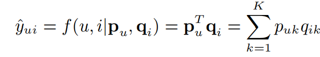
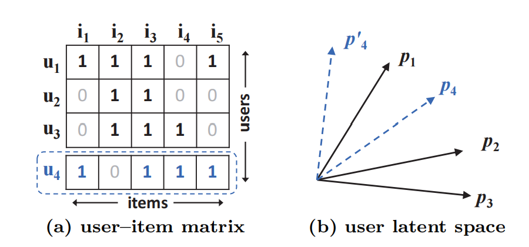
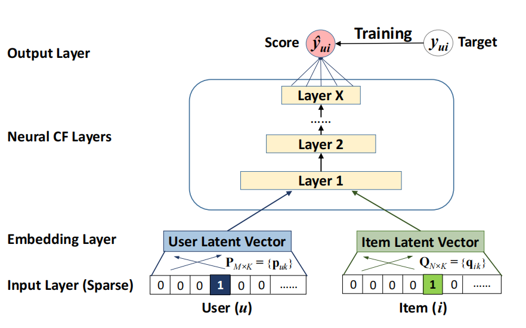
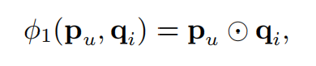
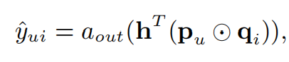
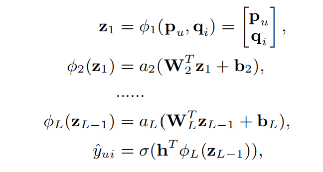
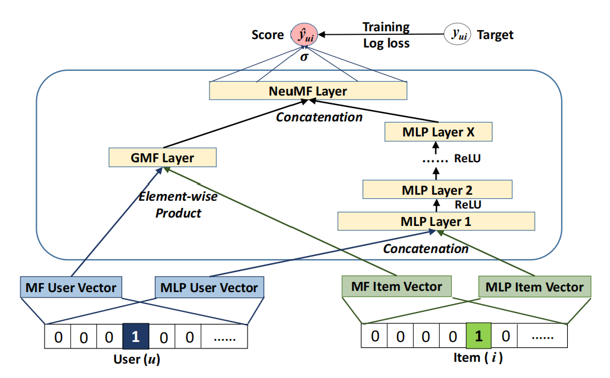
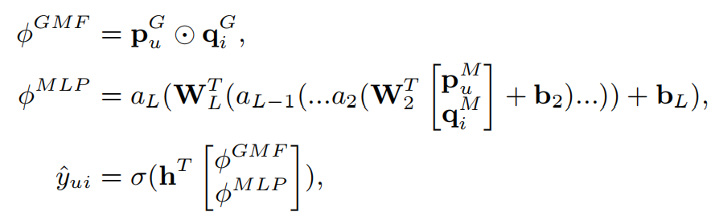

经典推荐模型:NeuralCF
之前，我们在协同过滤的基础上，引入了矩阵分解技术，将用户-物品的共现矩阵分解得到用户的隐向量和物品的隐向量。由于隐向量的维度一般是低于其在共现矩阵中的维度的，从而加强了协同过滤模型对于稀疏矩阵的处理能力，提升了模型的泛化性能。具体可以看这篇：
https://hans0809.github.io/2021/08/31/%E5%BD%93SVD%E9%81%87%E8%A7%81CF/
这样，在获得用户和物品的隐向量后，求解用户的某一隐向量与物品的某一隐向量之间的内积，就得到了对应的评分。
这其中的原理是：两个向量求内积，相当于求解两者之间的余弦相似度，因此该操作可以度量两个向量之间的相似性。
内积操作的缺点
假设隐向量所在空间维度为$K$，则第$u$个用户$p_u$对于第$i$个物品$q_i$的预测评分通过内积计算如下：

从计算公式可以看出，内积操作是一种线性运算。
下图左侧是用户-物品的共现矩阵，右侧是相应的用户隐向量空间。

在左侧的共现矩阵中，$u_4$与$u_1$最相似，其次是$u_3$，最后是$u_2$。
而在右侧的隐空间中，$p_4$与$p_1$最相似，其次是$p_2$，最后是$p_3$，其中$p_i$是$u_i$在隐空间的对应。
看，用户之间的相似性在共现矩阵中和在隐空间中表现不一致！
将共现矩阵中高维向量使用矩阵分解技术得到其在低维隐空间中的向量表示，这一操作在降低维度，将稀疏向量稠密化的同时，造成了信息的损失。
一个很自然的想法是，既然隐空间维度低，那就适当增大一些。但是，这样做很可能引起过拟合。
NeuralCF
NeuralCF优化了上述内积操作，具体地，它使用了多层神经网络+输出层的结构来代替内积操作。

它使用Embedding层来模拟矩阵分解，得到用户和物品的隐向量，然后将隐向量经过全连接层进行特征交叉，最后输出预测值。
当把图中的Neural CF Layer替换成内积操作时，就变成了矩阵分解。所以，不妨把NeuralCF看作是一个通用的框架。
有了这个框架，就可以在此基础上构建自己的模型了。
GMF(Generalized Matrix Factorization)
这里，将Neural CF Layer换成element-wise product操作。对于两个长度相同的向量做element-wise product，相当于两个向量的相同位置元素进行相乘，得到一个和两者长度一致的新的向量。
下面的公式展示了GMF的前向传播过程：


其中，$p$和$q$分别是经过Embedding后的用户隐向量和物品隐向量，$h$是全连接层的权重，$a$是激活函数。
$h$相当于给element-wise product结果中每个位置的值施加了一个权重。特别的，当$h$的值全是1时，element-wise product得到的向量中每个元素的权重都是1，此时相当于直接求解$p$和$u$的内积，这就是之前一直说的矩阵分解。
GMF也因此得名。
Multi-Layer Perceptron (MLP)
此时的Neural CF Layer使用多个堆叠的全连接层。
它将用户和物品的隐向量拼接起来，输入全连接层进行特征交叉，具体的前向传播过程如下：

NeuMF(Neural Matrix Factorization)
将GMF和MLP结合起来，就得到了NeuMF，其结构如下：

可以看到，该模型将GMF和MLP的输出结果(去掉输出层)进行了拼接，然后将拼接后的结果再经过全连接层做更充分的特征交叉，最后经过激活函数，输出最终的预测结果。
其前向传播过程如下：

注意其中GMF和MLP的Embedding层的权重是独立的，并不共享，因为这样能够根据两个模型各自的特点灵活调整，比如可以设置不同的隐向量维度。
参考：